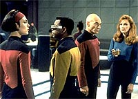
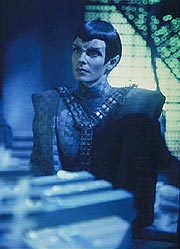
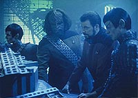
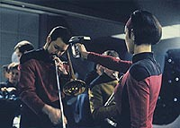
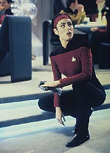

|
MANCHETE
DO EPISDIO
'High-concept'
pouco inspirado se
beneficia dos carismticos Romulanos
Episdio
anterior | Prximo
episdio
Sinopse:
Data Estelar: 45092.4.
 Aps
receber um sinal de socorro de uma nave cientfica Romulana, Picard
surpreende alguns membros da tripulao ao enviar um grupo avanado
para ajudar. Os oficiais Romulanos tambm ficam surpresos, mas tambm
aliviados de serem resgatados. Durante a misso, Geordi descobre
que um dos geradores da nave precisa de substituio. Ele e Ro se
preparam para voltar Enterprise para duplicar a pea, mas algo
errado acontece durante o transporte. Aps se desmaterializarem da
nave Romulana, os dois no aparecem na Enterprise. Aps vrias
tentativas de traz-los de volta, Picard obrigado a aceitar o
fato de que seus colegas esto mortos.
Mais tarde, Ro misteriosamente aparece em um corredor prximo
enfermaria. Ela se encaminha para l, onde Beverly Crusher est
preparando seu atestado de bito. Ela tenta dizer que est viva,
mas ningum a ouve. Ela fica em frente a todos, mas ningum a v.
Na verdade, Picard acaba atravessando-a como se no estivesse l.
Por causa disso, Ro conclui que s pode estar mesmo morta.
A alferes acaba encontrando Geordi, que tambm est tendo as
mesmas experincias estranhas. Embora os dois possam se ouvir, se
ver e se tocar, eles parecem estar isolados do resto da nave. Ro diz
a Geordi que acredita que estejam mortos e tenham retornado nave
como espritos. Goerdi, entretanto, se recusa a aceitar essa
explicao e comea a pensar em como descobrir o que est
havendo.
 Data
fica encarregado da dupla tarefa de planejar o velrio de seus
colegas e de investigar a causa de suas mortes. Geordi est
presente quando o andride especula que o acidente pode ter tido
algo a ver com o que ocorreu a bordo da nave Romulana. Ele e Worf
retornam ao veculo aliengena, usando uma nave auxiliar, para
investigar, e os invisveis Geordi e Ro pegam uma carona com eles.
Uma vez na nave, os Romulanos agem de forma muito pouco cooperativa
quando Data pede para tirar leituras da engenharia. Entretanto, eles
falam livremente uma vez que o andride deixa a sala, no sabendo
que Geordi e Ro podem ouvir tudo que eles dizem. O par invisvel
logo descobre que os Romulanos esto testando uma nova tecnologia
de camuflagem que funciona fazendo com que a matria saia de fase
com o resto do Universo, tornando-a invisvel. Assim, eles percebem
que no esto mortos --apenas acidentalmente camuflados.
Infelizmente, a dupla precisa conseguir um meio de se descamuflar
antes que a Enterprise deixe a rea, ou realmente acabaro mortos.
Geordi descobre um modo de voltar Enterprise, e Data nota um alto
nvel de campos chroniton na nave. Geordi percebe que so ele e Ro
quem criam esses campos, ao entrar em contato com objetos pela nave.
Eles tentam amplificar esse efeito quando Data ordena a descontaminao
com nions, partculas que agem tornando-os parcialmente visveis.
Eles percebem que precisam criar o maior nmero de campos de
chroniton possveis para que Data ordene uma descontaminao
capaz de faz-los reaparecer.
A dupla conduz o plano durante o velrio, que mais parece uma
animada festa. Eles criam um nmero enorme de campos de chroniton
ao causar a sobrecarga de um disruptor Romulano que tambm estava
camuflado. Data usa uma grande quantidade de nions para dissipar
os campos, mas, quando ele faz, a imagem dos dois desaparecidos
volta a emergir --apenas por um breve momento.
 Por
sorte, Data e Picard conseguem v-los e descobrem o que aconteceu.
Eles inundam a sala com as partculas de nions e Geordi e Ro se
rematerializam, tranformando o velrio em uma verdadeira celebrao
de suas vidas.
Comentrios:
O roteirista
Ronald D. Moore e "high-concepts" realmente no se bicam
--a especialidade, neste caso, de seu colega de Nova Gerao
Brannon Braga. "The Next Phase" representa
exatamente isto --um escritor desenvolvendo uma histria em uma
praia que no a dele.
O resultado um episdio que, ainda que capaz de entreter, no
pode ser considerado primoroso por nenhum aspecto. A idia original
do "high-concept", algo como "o que seria da
Enterprise se dois de seus tripulantes achassem que haviam morrido e
ficassem vagando pela nave?", est muito mais para uma histria
de terror do que de fico cientfica. Em alguns casos, os gneros
so intercambiveis. Infelizmente no era esse.
 Por
mais que haja a tentativa de dar uma roupagem cientfica ao fenmeno,
no funciona. No acha? Ento explique por que Geordi e Ro podem
atravessar paredes, mas conseguem andar pelo cho, que feito do
mesmo material. Ou ainda diga como eles faziam para respirar, se seu
isolamento do mundo material deveria incluir todas as molculas,
inclusive as que compunham o ar. So questes simplesmente insolveis,
e que incomodam o telespectador mais exigente porque no aparecem
apenas por um momento, mas permeiam toda a histria. Em outras
palavras, h uma exigncia muito grande sobre a audincia para
desligar o seu senso crtico. Simplesmente no funciona.
Outro problema que os personagens no so postos para um grande
propsito aqui. Se formos pensar bem, este um episdio em que
os protagonistas esto proibidos de interagir com os outros
personagens! Geordi e Ro so utilizados aqui de forma coerente e
competente, mas nada profunda. E, por incrvel que parea, a
alferes, que recorrente na srie, posta para melhor uso, ao
questionar seus valores religiosos, do que o engenheiro-chefe da
nave, que regular! Pobre Geordi!
Pelo menos h algumas coisas tambm a elogiar, e esses fatores
trazem bom entretenimento e, em certa medida, compensam pelos
defeitos j apontados. Uma delas se resume em uma palavra:
Romulanos. Os ardilosos aliengenas de orelhas pontudas sempre so
uma grata viso em Jornada nas Estrelas, e aqui no
diferente. Do ponto de vista da trama Romulana, o enredo bem
desenvolvido --justamente por ser o ponto forte dos roteiros de Ron
Moore.
incmodo ver Romulanos e federados trabalhando to bem no incio
do episdio, e existe uma sensao na audincia de que
"algo est muito errado com tudo isso". Antes que os
telespectadores possam pensar que h uma tremenda descaracterizao
dos viles, descobrimos suas verdadeiras intenes. um
verdadeiro alvio ouvir o Romulano contar que pretende que a
Enterprise voe pelos ares ao entrar em dobra --"a-h! Sabia
que eles no podiam ser to bonzinhos...", pensa a audincia.
Tambm legal, apesar de trazer tona todos aqueles problemas tcnico-cientficos
da premissa, a perseguio entre o Romulano e Geordi e Ro, concluda
com uma glida morte para o malvado no frio do espao.
 Por
fim, o relacionamento entre Data e Geordi mais uma vez traz uma dose
de emoo para os fs de corao mais mole. Embora eles no
troquem um abrao aps o engenheiro retornar " vida",
como se o fizessem --o que deixa a cena ainda mais tocante.
A "volta" de Geordi e Ro ao Universo da Enterprise tambm
parece um tipo de homenagem Srie Clssica --o que no
seria nada surpreendente, sabendo que o roteirista Ron Moore. A
apario dos dois diante de Picard e Data parece muito com as sequncias
em que Kirk, supostamente morto, aparece brevemente diante de seus
colegas da Enterprise, no episdio "The Tholian Web".
No fim das contas, "The Next Phase" um episdio
mediano, que compensa com o carisma de seus antagonistas e com
momentos isolados as falhas inerentes premissa. Trocando em midos,
d pro gasto.
Citaes:
Ro - "La Forge."
("La Forge.")
La Forge - "Ro? Boy, am I glad to see you. And I'm really
glad that you can see me. It's like... it's like I'm here but I'm
not here."
("Ro? Rapaz, estou feliz em te ver. E estou feliz mesmo que voc
esteja me vendo. como... como se eu estivesse aqui mas no
estivesse.")
Ro - "I don't have all the answers. I haven't been dead
before."
("Eu no tenho todas as respostas. Nunca estive morta
antes.")
Data - "I never knew what a friend was until I met Geordi.
He spoke to me as though I were human. He treated me no differently
from anyone else. He accepted me for what I am. And that, I have
learned, is friendship."
("Nunca soube o que era uma amigo at conhecer Geordi. Ele
falava comigo como se eu fosse humano. Ele no me tratava
diferentemente de ningum. Ele me aceitava pelo que eu sou. E isso,
eu aprendi, amizade.")
Trivia:
 David Carson, o diretor deste episdio, comandou o primeiro filme
da Nova Gerao para o cinema, "Jornada nas
Estrelas - Generations".
David Carson, o diretor deste episdio, comandou o primeiro filme
da Nova Gerao para o cinema, "Jornada nas
Estrelas - Generations".
Este episdio era para ser um "money-saving show" (episdio
barato, para economizar verba), porm, como j havia ocorrido com "Power
Play", acabou saindo mais caro do que o planejado, j
que em determinadas cenas era preciso mostrar os personagens
atravessando paredes, como fantasmas. E haja efeitos especiais!
Perceba o erro de Picard quando se refere ao incidente cometido por
Ro Laren no planeta Garon IV. Na verdade, o incidente ocorreu em
Garon II, como foi dito em "Ensign
Ro" e "Conundrum".
Embora no exista uma referncia para a data estelar no dirio do
capito neste episdio, ficamos sabendo que ele se passa em
45092.4 graas ao registro da suposta morte de Ro Laren no seu
certificado de falecimento.
Susanna Thompson, que neste episdio interpreta a personagem Varel,
ficou mais conhecida entre os fs por ter interpretado
posteriormente a Rainha Borg nos episdios "Unimatrix
Zero" e "Dark Frontier", de Voyager.
No filme "Primeiro Contato" e na concluso de Voyager,
"Endgame", a vil foi interpretada por Alice Krige.
Thomas Kopache fez sua primeira apario
em Jornada neste episdio, como o Romulano Mirok. Mais
tarde, em "Emergence", Nova Gerao, ele
faria um engenheiro; no filme "Generations", um
oficial de comunicaes; em "The Thaw", Voyager,
Viorsa; e em dois episdios de Deep Space Nine, como pai de
Kira Nerys, Kira Taban. A ltima apario dele foi no piloto "Broken
Bow", de Enterprise, como o Vulcano Tos.
Ficha
tcnica:
Escrito por Ronald D. Moore
Direo de David Carson
Exibido em 18/05/1992
Produo: 124
Elenco:
Patrick Stewart como
Jean-Luc Picard
Jonathan Frakes como William Thomas Riker
Brent Spiner como Data
LeVar Burton como Geordi La Forge
Michael Dorn como Worf
Gates McFadden como Beverly Crusher
Marina Sirtis como Deanna Troi
Elenco convidado:
Michelle Forbes
como alferes Ro Laren
Thomas Kopache como Mirok
Susanna Thompson como Varel
Shelby Leverington como chefe de transporte Brossmer
Brian Cousins como Parem
Kenneth Messerole como alferes McDowell
Episdio
anterior | Prximo
episdio
|